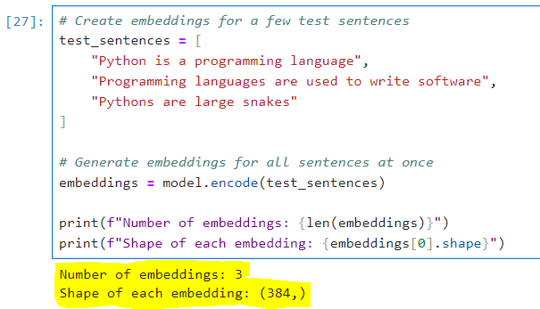
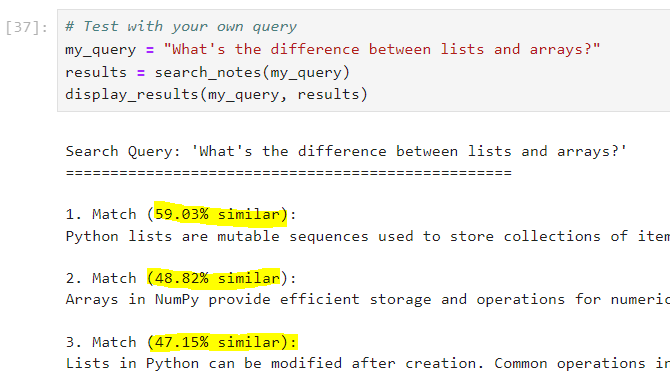

Our note-taking system requires several Python packages to handle text processing and similarity search. Here's what we'll be using:
📓 Jupyter Notebook Tips: For better organization and easier debugging:
Run the following command in a new Jupyter notebook cell:
!pip install sentence-transformers
You should see something like this during installation:

After installation completes, run this code to verify everything is working:
# Import required libraries from sentence_transformers import SentenceTransformer import numpy as np # Simple test to ensure everything works print("✓ Imports successful!")

📝 Note: If you see any warnings about CUDA or GPU, don't worry! We've designed this system to work perfectly fine on CPU.
If you encounter any issues during installation:
If you're on Windows and see warnings about symlinks, these can be safely ignored. They won't affect the functionality of our system.
Once you've completed the installation and verified it's working, we're ready to move on to preparing our notes data!
We'll start by creating a collection of notes that we'll use throughout this project. Each note will be a simple text string, but they can contain:
Let's create a list of sample notes. Copy this code into your notebook:
# Initialize our collection of notes notes = [ "Python lists are mutable sequences used to store collections of items. They can contain mixed types and are defined using square brackets.", "Lists in Python can be modified after creation. Common operations include append(), extend(), and insert().", "Data structures are fundamental building blocks in programming. They help organize and store data efficiently.", "Arrays in NumPy provide efficient storage and operations for numerical data. They are widely used in scientific computing.", "Object-oriented programming in Python uses classes and objects. Classes define the structure and behavior of objects.", "The pandas library is built on top of NumPy and provides powerful data manipulation tools through DataFrames.", "Version control with Git helps track changes in code. Common commands include commit, push, and pull.", "Python functions are defined using the def keyword. They can accept parameters and return values.", ] # Print the number of notes we have print(f"Created {len(notes)} notes")
💡 Note: These are placeholder notes about programming concepts. You can replace these with your own study notes, documentation snippets, or any text content you want to search through!
Let's verify our notes are properly structured:
# Print each note with its length for i, note in enumerate(notes): print(f"\nNote {i+1} (Length: {len(note)} characters):") print(f"{'='*50}") print(note)
Our sample notes have several important characteristics that make them good for semantic search:
# Quick analysis of our notes note_lengths = [len(note.split()) for note in notes] print(f"Average words per note: {sum(note_lengths)/len(note_lengths):.1f}") print(f"Shortest note: {min(note_lengths)} words") print(f"Longest note: {max(note_lengths)} words")
About List Comprehensions: This is a shorter way to create a list. Instead of writing:
lengths = [] for note in notes: word_count = len(note.split()) lengths.append(word_count)
We can write it in one line:
lengths = [len(note.split()) for note in notes]
Same result, less code! Python developers love these shorter forms.
When replacing or adding your own notes, keep these tips in mind:
⚠️ Important: While SBERT can handle longer texts, it works best with notes that are focused on a single topic or concept. If you have very long notes, consider splitting them into smaller, focused chunks.
Our notes are now ready for processing! In the next section, we'll load the SBERT model and convert these notes into semantic embeddings.
🔍 Try it yourself: Before moving on, try adding a few of your own notes to the list. This will help you understand how different types of content work with semantic search.
First, we'll load the SBERT model. This is a one-time operation that might take a few seconds:
from sentence_transformers import SentenceTransformer # Load the model - this may take a few seconds model = SentenceTransformer('all-MiniLM-L6-v2') print("Model loaded successfully!")
⚠️ The first time you run this, it will download the model files (~100MB). This only happens once.
Let's create a single embedding to understand what we're working with:
# Create an embedding for a simple sentence test_sentence = "This is a test sentence to understand embeddings." embedding = model.encode(test_sentence) # Look at the embedding's properties print(f"Embedding shape: {embedding.shape}") print(f"First 5 values: {embedding[:5]}")
💡 Each embedding is a vector of 384 numbers that represents the semantic meaning of the text.
Now let's test the model with multiple sentences:
# Create embeddings for a few test sentences test_sentences = [ "Python is a programming language", "Programming languages are used to write software", "Pythons are large snakes" ] # Generate embeddings for all sentences at once embeddings = model.encode(test_sentences) print(f"Number of embeddings: {len(embeddings)}") print(f"Shape of each embedding: {embeddings[0].shape}")
About that (384,) Shape: When you see (384,), that trailing comma makes it a tuple with one value. Without the comma, (384) would just be the number 384 in parentheses. NumPy uses tuples for shapes because vectors and matrices can have multiple dimensions - for example, a 2D matrix might be (3,4). Even for 1D vectors, it keeps the tuple format for consistency!
Let's verify that our embeddings capture semantic meaning:
import numpy as np # Calculate similarities between sentences def calculate_similarity(emb1, emb2): return np.dot(emb1, emb2) / (np.linalg.norm(emb1) * np.linalg.norm(emb2)) # Get similarities between all pairs for i in range(len(test_sentences)): for j in range(i + 1, len(test_sentences)): similarity = calculate_similarity(embeddings[i], embeddings[j]) print(f"\nSimilarity between:\n'{test_sentences[i]}' and\n'{test_sentences[j]}':\n{similarity:.3f}")
Understanding Similarity: We're using cosine similarity here - imagine two arrows pointing from the center of a circle. The more similar two texts are, the smaller the angle between their arrows. If they point in exactly the same direction, they're very similar (score near 1). If they point in opposite directions, they're very different (score near -1).
Key things to understand about our SBERT model:
⚠️ Keep the model in memory! Don't reload it for each operation - it's expensive.
Now that we have our model set up and understand how embeddings work, we're ready to process our actual notes collection!
First, let's create embeddings for our entire notes collection:
# Convert all notes to embeddings note_embeddings = model.encode(notes) print(f"Created embeddings for {len(notes)} notes") print(f"Each embedding has shape: {note_embeddings[0].shape}")
Now let's create our main search function:
def search_notes(query, top_k=3): # Convert search query to embedding query_embedding = model.encode(query) # Calculate similarities with all notes similarities = np.dot(note_embeddings, query_embedding) / ( np.linalg.norm(note_embeddings, axis=1) * np.linalg.norm(query_embedding) ) # Get top k matches top_idx = np.argsort(similarities)[::-1][:top_k] # A list of dictionaries results = [] for idx in top_idx: results.append({ 'note': notes[idx], 'similarity': similarities[idx] }) # Return matching notes with thier similarity scores return results
What's This Math Doing? This code calculates how similar each note is to your search query. np.dot multiplies the numbers in matching positions and adds them up, while np.linalg.norm helps normalize the results so longer texts don't automatically get higher scores. The [::-1] reverses the order so we get highest scores first!
Let's test our search with different types of queries:
# Function to display search results nicely def display_results(query, results): print(f"\nSearch Query: '{query}'") print("=" * 50) for i, r in enumerate(results, 1): print(f"\n{i}. Match ({r['similarity']:.2%} similar):") print(r['note']) # Try some example searches queries = [ "How do Python lists work?", "Tell me about data structures", "What is object oriented programming?" ] for query in queries: results = search_notes(query) display_results(query, results)
💡 Notice how the search finds semantically related notes even when the exact words don't match!
Experiment with your own queries:
# Test with your own query my_query = "What's the difference between lists and arrays?" results = search_notes(my_query) display_results(my_query, results)
⚠️ Remember: The quality of results depends on your notes collection. More diverse notes = better search coverage!
Here are some ways you can enhance your semantic search system. Pick ones that interest you!
# Structure notes with categories notes = [ { 'content': "Python lists are mutable sequences...", 'category': "Python Basics", 'tags': ["data structures", "lists"] } ]
def search_notes(query, min_similarity=0.5): # Only return results above similarity threshold results = [r for r in results if r['similarity'] >= min_similarity]
Another List Comprehension: Instead of writing:
filtered_results = [] for r in results: if r['similarity'] >= min_similarity: filtered_results.append(r)
We can write the shorter version:
filtered_results = [r for r in results if r['similarity'] >= min_similarity]
The if part filters out results that aren't similar enough.
def chunk_note(note, max_words=50): # Split long notes into smaller chunks words = note.split() return [' '.join(words[i:i+max_words]) for i in range(0, len(words), max_words)]
What's This join() Thing? Let's break it down with a simple example:
words = ["hello", "there", "student"] result = ' '.join(words) # result is "hello there student"
The ' ' (space) is what we want between each word. Without it:
''.join(words) # Would give: "hellotherestudent" ','.join(words) # Would give: "hello,there,student"
So when we do ' '.join(words[i:i+max_words]), we're taking a slice of words and putting spaces between them to make a proper sentence again!
One More List Comprehension: Yes, we're being lazy (in a good way)! Instead of:
chunks = [] for i in range(0, len(words), max_words): chunk = ' '.join(words[i:i+max_words]) chunks.append(chunk)
We can write:
chunks = [' '.join(words[i:i+max_words]) for i in range(0, len(words), max_words)]
Being lazy (writing less code) often means fewer chances for bugs!
Group similar results together using techniques like K-means on embeddings.
Store embeddings in numpy arrays and save to disk for faster loading.
📚 Here are some beginner-friendly resources to learn more:
To continue learning:
🎯 Start small! Pick one enhancement at a time and test thoroughly before adding more features.